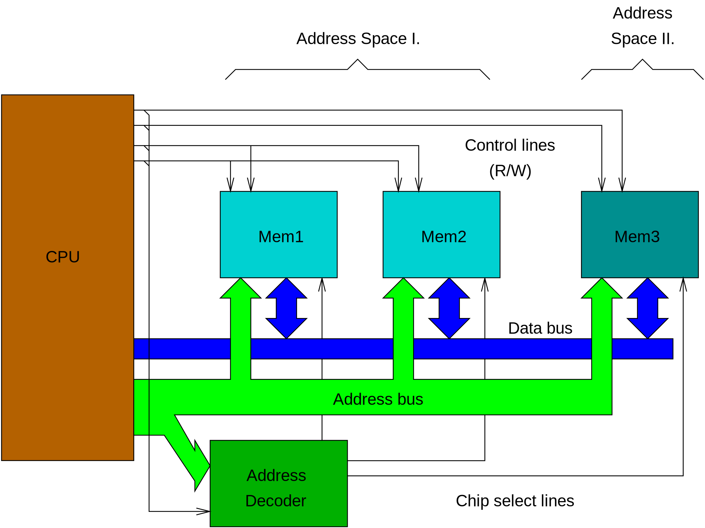
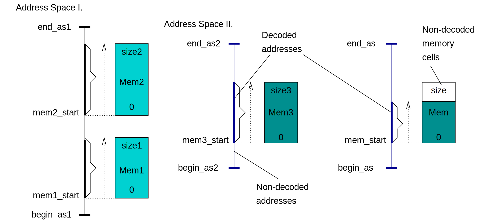
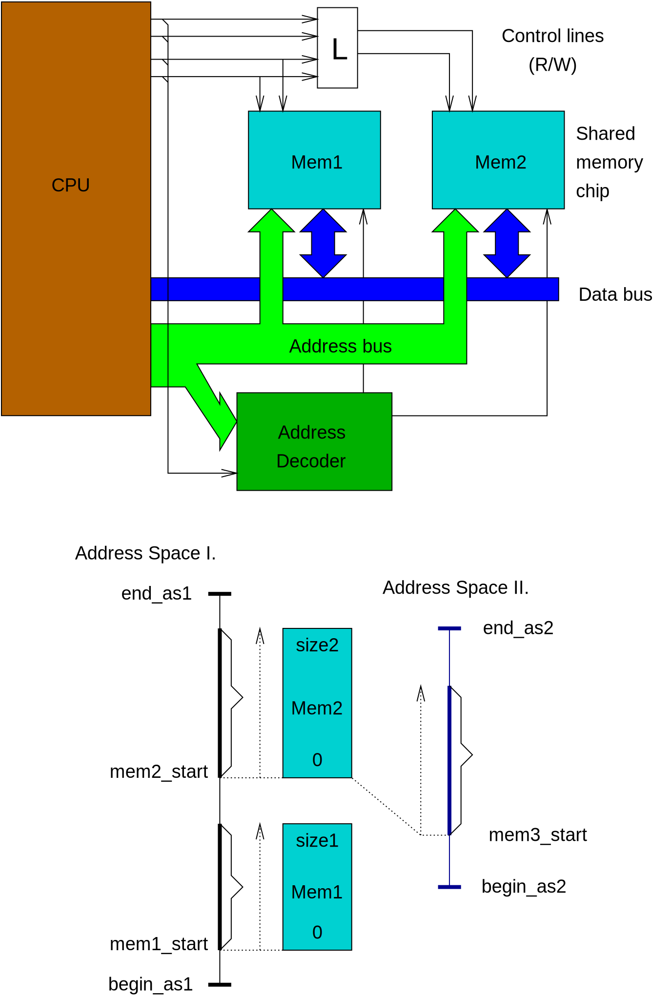

Memory simulation in µCsim
Typical microprocessor system can look like this:

In our terminology "address space" means a set of:
- address bus lines
- data bus lines
- control (read/write) lines
Bus lines can be shared by address spaces, in this case number of control
line sets specifies the address spaces.
Microcontrollers usually have more address spaces. Some is used inside
only, some can be used for external memories.
Address space does not store any value. It just specifies range of
addresses by start address (which is not necessarily zero) and size
which the CPU can provide when it tries to access a memory location.
"Memory chip" is a circuit which can hold values in cells. Cells are
indexed from 0 up to size-1. Each cell stores some (usually 8) bits.
Addresses coming from an address space via address bus must be routed to
memory and translated to cell indexes. This is done by the "address
decoder". It listens addresses on the bus and control lines and
enables exactly one memory chip. This way cells of the memory chip appear in
the address space.

It is possible that some addresses are not decoded. Writing to such an
address results data to be lost. Reading of a non-decoded address results
random value. Pullup or pulldown resistors can be applied to data bus
lines to provide a specific value for read operations.
As it shown above, it is also possible that some cells of a chip is not
mapped to any address.
Decoder connects an address of an address space to a cell of a memory chip.
Only one cell can be connected to each addresses but same cell can be
connected to more than one address spaces. This is done by routing different
control lines to the same chip through logic L:

Because each cell of a memory chip uses same read/write control, in real
world it is not possible to share individual cells of a chip between
address spaces. In µCsim simulator we can define as many address decoders
as we want so it is possible to map any cell to any address.
Banking...
Banding...